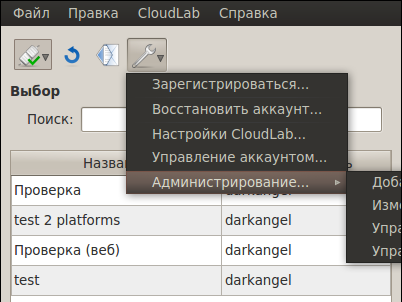
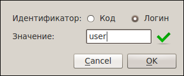

[Назад: 2.2. Редактирование и удаление лабораторных работ]
[Далее: 2.4. Управление инвайтами]
Управление пользователями
Чтобы выполнить какую-либо административную задачу, воспользуйтесь одним из пунктов меню, показанного на рисунке ниже:

Пример добавления новой учетной записи показан на следующем рисунке:

Процесс заполнения большинства полей подробно описан здесь. Не
забудьте лишь обеспечить будущему пользователю доступ к сервису CloudLab (см. красную стрелку) и назначить группы, в
которых он будет состоять.
Для редактирования данных пользователя выберите соответствующий пункт меню и укажите логин этого пользователя, как
показано на рисунке:

В остальном процесс редактирования почти ничем не отличается от процесса добавления нового пользователя.
[Назад: 2.2. Редактирование и удаление лабораторных работ]
[Далее: 2.4. Управление инвайтами]